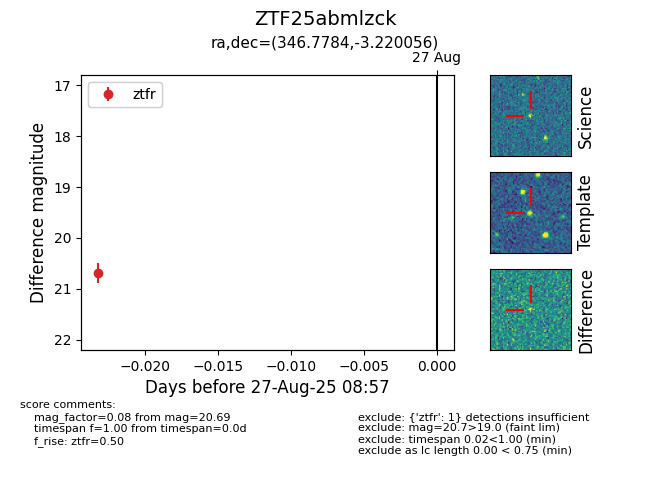

Target ZTF25abmlzck at 2025-08-27 08:57, see:
FINK: fink-portal.org/ZTF25abmlzck
Lasair: lasair-ztf.lsst.ac.uk/objects/ZTF25abmlzck
ALeRCE: alerce.online/object/ZTF25abmlzck
alt names
ZTF25abmlzck (ztf,fink)
coordinates:
equatorial (ra, dec) = (346.7784,-3.22006)
galactic (l, b) = (72.2037,-55.45833)
photometry
last ztfr=20.69
1 ztfr detections
